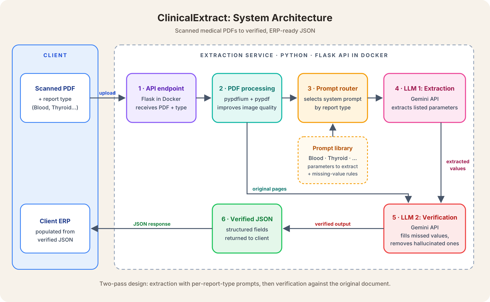
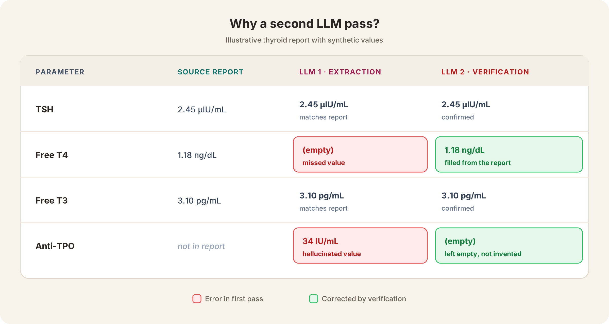
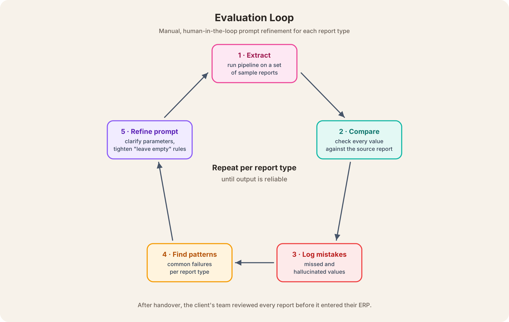
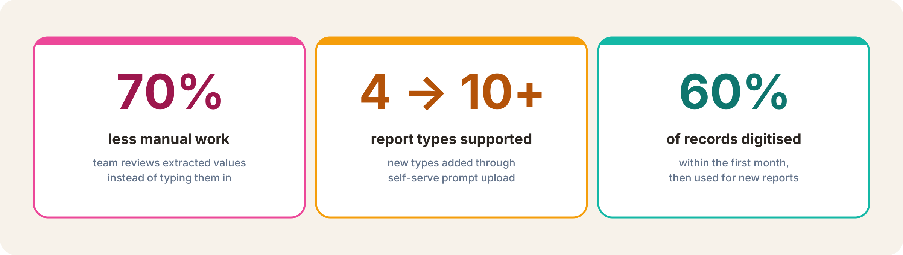

Problem and context
A healthcare client needed to digitise a large backlog of medical reports (blood tests, thyroid panels and other report types) and load the results into their ERP system. A team was entering every value by hand, which was slow, expensive and error-prone.
The reports were scanned images inside PDFs, not digital text. Scans varied in angle, brightness and layout from one report to the next, and traditional OCR couldn’t extract values from them reliably. The client needed a system that could read these inconsistent scans and return clean, structured data their ERP could ingest directly.
Architecture diagram

How it works
- Upload. The client calls the API with the PDF and its report type (e.g. Blood, Thyroid).
- Pre-processing. Pages are processed with pypdfium and pypdf to improve image quality before extraction.
- Prompt routing. The report type selects a dedicated system prompt listing the exact parameters to extract for that report.
- Extraction (LLM 1). Gemini reads the processed pages and extracts the parameters, following strict rules on what to extract and how to handle missing values.
- Verification (LLM 2). A second call receives the original PDF and the first output, checks for missed or hallucinated values, and corrects them.
- Output. The verified result is returned as JSON, which the client uses to populate their ERP.
My role
I designed the full pipeline and wrote it in Python. The key decisions:
- Gemini over OpenAI. I chose the Gemini API for its lower cost and more generous usage limits, which mattered for processing large volumes of reports.
- A second LLM for verification. Single-pass extraction often hallucinated values or missed important ones. I added a verification step that compares the extracted output against the original PDF. This improved accuracy significantly and was the most important design decision in the system.
- One system prompt per report type. Each report type has different parameters, so I wrote a dedicated prompt for each, and the API selects the right one from the report type the client sends. This kept prompts focused and made adding new report types straightforward.
- Explicit rules for missing values. In medical data, a wrong value is worse than an empty one. The prompts instruct both models to leave a field empty if the value isn’t in the report, rather than guessing. In verification, any empty field is checked against the report and filled only if the value is actually present.
- A simple API contract. Exposing a single upload endpoint that returns JSON meant the client could integrate it directly with their ERP, without changing their workflow.

Evaluation against a baseline
For each report type, I manually compared the extracted values against a set of real reports, checking every parameter against the source document.
I logged every mistake and looked for patterns: parameters that were commonly missed, and cases where the model produced values that weren’t in the report. I used those patterns to refine each system prompt, adding clearer parameter descriptions where values were being missed and stricter rules where the model was inventing values. I repeated this until the output was reliable for that report type.

Once the client started using the API, their team became the final check: every extracted report was reviewed before it entered their ERP.
Business impact

- 70% less manual work. The client’s team moved from typing every value by hand to only reviewing the extracted output. We estimated this by comparing the time to fill in one report manually with the time to check an extracted one.
- Scaled from 4 to 10+ report types. Adding a report type only needed a new system prompt listing its parameters. I built a second API endpoint so the client could upload new prompts themselves using a template, filling in the report type and parameters without needing us.
- 60% of records digitised within a month. The client cleared most of their backlog in the first month and continued using the system for new reports.
Design trade-offs and lessons learned
- Human-in-the-loop over automated evaluation. Scan quality varied too much to use OCR or another tool as a reliable ground truth, so evaluation had to be manual. I did the initial evaluation, and after handover the client’s team reviewed every report before it entered their ERP. In medical records, a correct value matters more than speed, so we accepted the slower review step.
- Accuracy over cost and latency. The verification pass doubles the LLM calls per report and adds processing time. We accepted this because it caught the missed and hallucinated values that a single pass let through.
- Lesson: tell the model what not to do. The biggest gains came from the system prompt, especially from being explicit about what the model shouldn’t do. Telling the LLM that it’s acceptable to leave a field empty when the value isn’t in the report did more to reduce hallucinations than any other change.